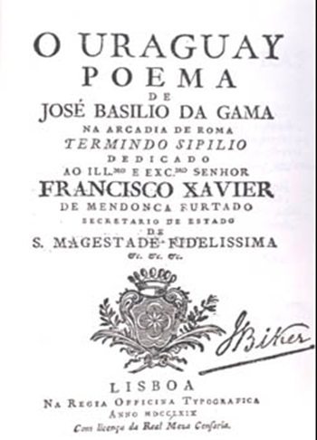
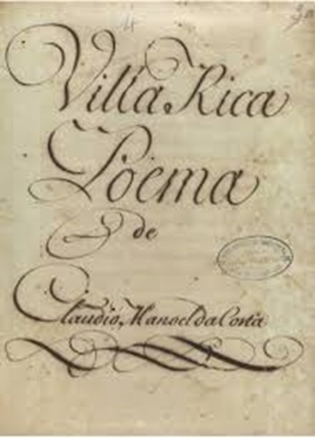
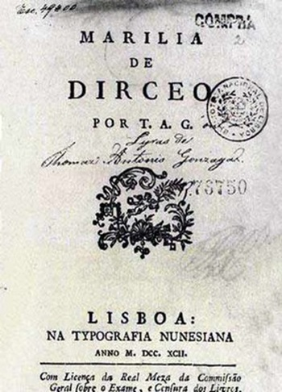
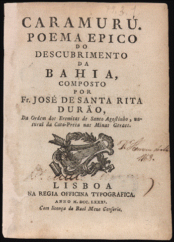
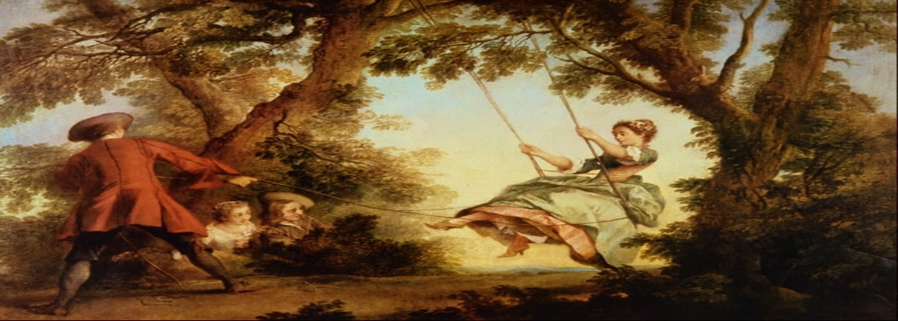

ARCADISMO
 No Brasil, o Arcadismo exalta a beleza da natureza e a vida simples no campo, promovendo uma crítica à urbanização, enquanto busca inspiração em modelos clássicos e expressa um forte sentimento nacionalista. O Arcadismo, de 1768 a 1836, surge como uma reação ao exagero barroco, buscando a simplicidade e a inspiração na natureza.
A poesia pastoral e a exaltação da vida simples são características marcantes deste período. Autores como Tomás Antônio Gonzaga e Cláudio Manuel da Costa são alguns dos principais representantes do Arcadismo no Brasil.
No Brasil, o Arcadismo exalta a beleza da natureza e a vida simples no campo, promovendo uma crítica à urbanização, enquanto busca inspiração em modelos clássicos e expressa um forte sentimento nacionalista. O Arcadismo, de 1768 a 1836, surge como uma reação ao exagero barroco, buscando a simplicidade e a inspiração na natureza.
A poesia pastoral e a exaltação da vida simples são características marcantes deste período. Autores como Tomás Antônio Gonzaga e Cláudio Manuel da Costa são alguns dos principais representantes do Arcadismo no Brasil.
PRINCIPAIS CRONISTAS
Cláudio Manuel da Costa (1729-1789): Considerado precursor do Arcadismo no Brasil, sua obra destaca paisagens e temas nacionais. Obras principais: Obras Poéticas (1768) e Villa Rica (1773). Suicidou-se após ser preso por participar da Inconfidência Mineira.
José de Santa Rita Durão (1722-1784): Autor do poema épico Caramuru (1781), que narra a vida de um português entre os índios Tupinambás. Suas obras incluem Pro anmia studiorum instauratione oratio (1778).
José Basílio da Gama (1741-1795): Autor do poema épico O Uraguai (1769), que aborda conflitos entre europeus, jesuítas e indígenas. Participou da Arcádia Romana e suas obras incluem Epitalâmio às Núpcias e Quitúbia.
Tomás Antônio Gonzaga (1744-1810): Conhecido pelo pseudônimo Dirceu, sua obra Marília de Dirceu (1792) expressa um romance idealizado. Outras obras: Cartas Chilenas (1863).




CARACTERISTICAS
Exaltação da natureza: Valorização do ambiente natural e rural.
Bucolismo: Apelo à vida simples e pastoral, criticando a vida urbana.
Modelo clássico: Influência da literatura clássica, com linguagem simples e objetiva.
Pseudônimos: Uso de nomes fictícios pelos autores.
Temas: Amor, vida, casamento e paisagens.
